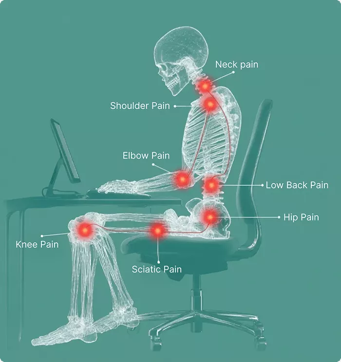
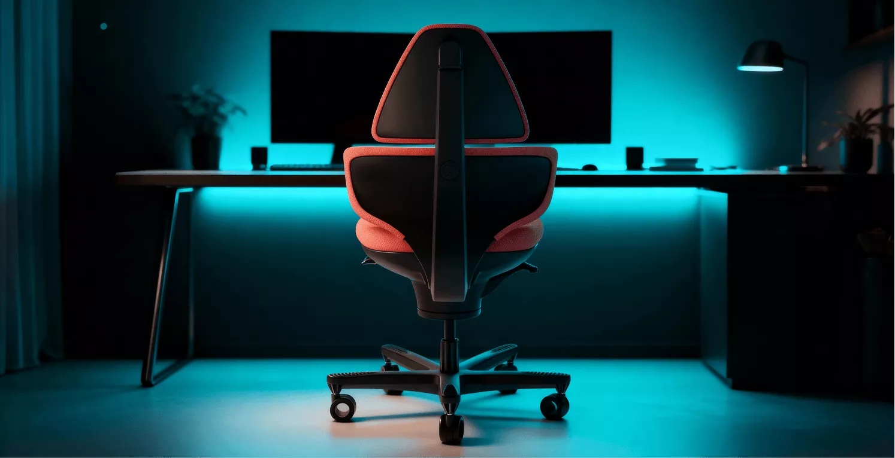
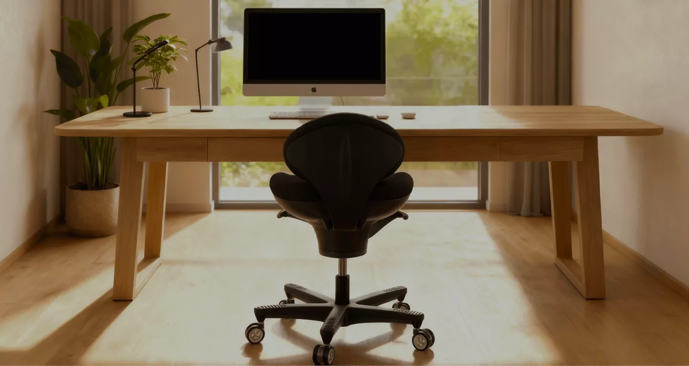
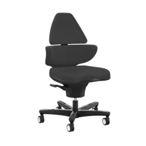
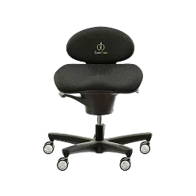
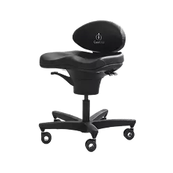
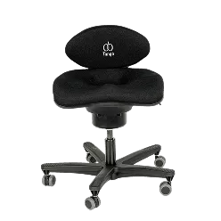
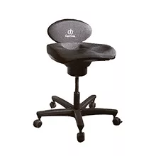
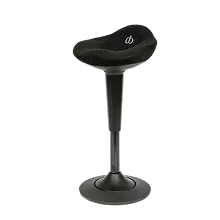

Elite
Ergonomic Active-Sitting Chair
Read more
Designed by health professionals to reduce back, hip and neck pain — so you can sit smarter and feel better.
Explore Shop
Despite their ergonomic design, conventional office chairs often disrupt your body’s natural alignment. These chairs promote pelvic tilt, rounded shoulders, and muscle stiffness, leading to chronic pain and slouching. Even with precise adjustments, standard office seating can leave users in static positions, causing discomfort in the back, hips, neck, and sciatic nerve pathways.
CoreChair transforms seated wellness with scientifically validated design principles. It promotes proper alignment of the pelvis, hips, and spine while incorporating therapeutic movement throughout your workday. This dynamic chair strengthens core muscles, relieves pressure from prolonged sitting, and is validated by multiple University research studies, and recommended by healthcare professionals as an effective solution for back pain management.



Ergonomic Active-Sitting Chair
Is the Elite the right choice for you?
Choose the CoreChair Elite if you want all the benefits of active sitting with the added reassurance of a flexible tall back. It’s ideal if you have pre-existing back pain, value freedom of movement, and like the option to occasionally lean back during calls or meetings—without sitting reclined all day.
If you prefer a more open, back-free sitting experience, the Classic or Sport may be a better fit, while the Tango offers the same core movement technology in a simpler, everyday design.
All CoreChairs are built to support healthy posture and movement—the best choice is the one that matches how you like to sit, move, and work throughout your day.
Features:
The CoreChair Elite’s flexible Clever-Spine is designed to support healthy upper-back posture without restricting natural movement. Its tapered upper backrest maintains freedom through the shoulders and arms, while the flexible spine mechanism moves with you—allowing your back to stay supported yet responsive. The result is upright posture with continuous mobility, helping you avoid stiffness and stay comfortably active while seated.
The CoreChair Elite’s optimized ergonomic support pairs a sculpted, pressure-relieving seat with pelvic-stabilizing support to work as one integrated system. Together, they evenly distribute pressure, reduce stress on the sit bones, and gently guide the pelvis into a neutral, upright position—helping minimize strain on the low back while supporting healthy, active sitting throughout the day.
At the core of the Elite is a patented seat-pan mechanism that allows up to 14 degrees of controlled movement, encouraging subtle, continuous motion while you sit. This dynamic movement promotes healthy blood flow, keeps joints gently mobile, and activates stabilizing muscles—helping reduce stiffness, maintain comfort, and support sustained focus throughout the workday.
The CoreChair Elite’s resistance handle puts movement control in your hands, allowing you to easily adjust how freely the seat responds as you sit. By increasing or decreasing resistance, you can tailor the amount of movement to your comfort and stability needs—supporting anything from subtle micro-movement to more active sitting throughout the day.
The CoreChair Elite is designed to support back health by promoting a stable, neutral pelvic position that helps reduce strain throughout the back. Its sculpted seat and pelvic-stabilizing support work together to evenly distribute pressure and encourage healthy posture—making the Elite an ideal option for individuals with pre-existing back pain who want gentle, continuous support while maintaining full freedom of movement through the upper body.
Designed for a wide range of body types, the CoreChair offers a comfortable, supportive fit that’s easy to dial in. Its intuitive two-paddle adjustment system allows you to quickly fine-tune seat depth and chair height, ensuring proper alignment and all-day comfort—without complicated levers or guesswork.
Built to the highest standards, CoreChair is crafted from premium, long-lasting materials and rigorously tested for real-world use. It meets BIFMA performance and durability standards and is NEAT certified, recognizing its support of healthy, active sitting. Backed by an 8-year warranty, CoreChair is designed to deliver confidence, comfort, and reliability—year after year.

Ergonomic Support for Every Seat
Is the Classic the right choice for you?
The Classic is ideal for individuals with pre-existing back pain who prefer an open, back-free design that encourages constant movement and upright posture. By supporting neutral pelvic alignment without a tall backrest, it allows complete freedom through the spine and upper body while helping improve back health and reduce strain throughout the day.
Choose the CoreChair Classic if you want consistent support, natural movement, and a chair that keeps you engaged and aligned—without the need for upper-back support or occasional reclined sitting.
Features:
The CoreChair Classic brings together a contoured seat and integrated pelvic support to create balanced, full-body support while seated. This ergonomic pairing helps distribute pressure more evenly and encourages a naturally upright posture—reducing load on the sit bones and easing strain through the lower back during prolonged sitting.
The Classic is built around CoreChair’s patented seat-pan technology, which allows up to 14 degrees of smooth, controlled motion. This subtle movement keeps the body gently engaged, supporting circulation, joint comfort, and postural muscle activation—helping you stay comfortable and focused throughout the day.
With an integrated resistance handle, the CoreChair Classic allows you to adjust how responsive the seat feels beneath you. From softer, freer movement to firmer, more controlled support, users can fine-tune motion to match their comfort level and sitting style.
By promoting neutral pelvic alignment, the CoreChair Classic helps reduce stress on the lumbar spine and supports healthy posture. Its supportive yet flexible design makes it well-suited for individuals managing back discomfort, while still allowing unrestricted movement through the upper body.
The Classic is designed to comfortably accommodate a wide range of users with minimal adjustment. Its intuitive two-paddle system makes it easy to set seat height and depth, helping users achieve proper alignment quickly—without complex mechanisms or learning curves.
The CoreChair Classic is built using high-quality materials and tested to meet BIFMA performance and durability standards. It is also NEAT certified, recognizing its support of healthy, active sitting. Backed by an 8-year warranty, the Classic is designed for lasting comfort, confidence, and everyday reliability.

Active Seating for Wellness
Is the Sport the right choice for you?
The CoreChair Sport is best suited for clinical, rehabilitation, and high-use environments where durability, hygiene, and consistent support are essential.
The Sport is an excellent choice for individuals with pre-existing back pain who need a supportive, movement-friendly chair that stands up to frequent cleaning and daily use. Its medical-grade materials, adjustable movement resistance, and dynamic sitting design help promote healthy posture, improve back comfort, and encourage gentle movement—without sacrificing stability.
Choose the CoreChair Sport if you’re looking for a dependable, easy-to-sanitize solution that supports back health and active sitting in professional or therapeutic settings.
Features:
The CoreChair Sport is upholstered in medical-grade polyurethane designed for high-use, hygiene-focused environments. Built to withstand regular cleaning with common disinfectants, this resilient surface maintains its structure, comfort, and professional appearance over time. Backed by an 8-year warranty, it delivers long-term confidence in demanding clinical and rehabilitation settings.
The Sport combines a contoured seat surface with integrated pelvic support to promote balanced posture while seated. This supportive pairing helps redistribute pressure away from sensitive areas and encourages a neutral pelvic position—reducing unnecessary load on the lower back during extended sitting.
At the foundation of the CoreChair Sport is a patented seat-pan design that allows controlled movement throughout the workday. With up to 14 degrees of motion, it encourages gentle activity that supports circulation, joint comfort, and muscular engagement—helping prevent stiffness without disrupting stability.
The Sport includes a resistance control handle that allows users to fine-tune how the chair responds to movement. By adjusting resistance, users can select a firmer or more responsive feel—supporting individual comfort preferences, stability needs, and therapeutic use cases.
Engineered with back health in mind, the CoreChair Sport supports neutral pelvic alignment to help minimize stress on the lumbar spine. Its supportive yet responsive design makes it well-suited for individuals managing back discomfort, as well as clinical settings where ongoing postural support and movement are essential.

Ergonomic Comfort, Sustainable Design
Is the Tango the right choice for you?
The CoreChair Tango is best suited for those looking to take a preventative approach to back health.
Designed for core strengthening and natural movement, the Tango encourages healthy posture and gentle, continuous motion to help reduce stiffness before discomfort begins. While it does not offer adjustable movement resistance and isn’t the primary recommendation for individuals with existing back pain, it’s an excellent option for users who want to stay active while seated and support long-term spinal health.
Choose the CoreChair Tango if you’re looking to maintain good posture, promote movement throughout the day, and proactively support your back in a simple, approachable design.
Features:
The CoreChair Tango is designed to support natural sitting alignment through a thoughtfully contoured seat and integrated pelvic support. This combination helps spread pressure more evenly across the seat surface while encouraging a neutral, upright posture—reducing stress on the sit bones and lower back during everyday use.
The Tango features CoreChair’s patented seat-pan technology, allowing controlled movement as you sit. With up to 14 degrees of motion, it encourages gentle, ongoing activity that helps keep circulation flowing, joints comfortable, and the body engaged—supporting focus and reducing stiffness over longer periods of sitting.
By promoting stable pelvic positioning, the CoreChair Tango helps minimize strain on the lower spine and supports healthy posture throughout the day. Its supportive design offers consistent comfort for users seeking everyday back support, while still allowing natural upper-body freedom and movement.
Designed to comfortably accommodate a wide range of users, the Tango makes adjustment simple. Its intuitive two-paddle system allows quick changes to seat height and depth, helping users find proper alignment with minimal effort—for comfortable, confident sitting from the start.
Built for everyday environments, the CoreChair Tango meets BIFMA testing standards and carries NEAT, recognizing its support of active sitting. Supported by a 3-year warranty, the Tango offers dependable comfort, durability, and peace of mind.
Ergonomic Active-Sitting Chair
Ergonomic Support for Every Seat
Active Seating for Wellness
Ergonomic Comfort, Sustainable Design
Our Supporters
CoreChair ambassadors are healthcare professionals that see the benefits that CoreChair can offer. These individuals have shown a passion for the active sitting movement and have partnered with us to help spread the word!
Thousands of satisfied users trust CoreChair for their daily comfort and support, inspired by the experiences of our influencers who highly recommend its ergonomic design and health benefits.
Join thousands who’ve replaced pain with movement. Feel the difference in your comfort, posture, and focus — or return it within our satisfaction guarantee period.
60-day satisfaction guarantee
CoreChair Elite, Classic and Sport Models
30 day satisfaction guarantee

CoreChair Tango Models
30 day satisfaction guarantee

CorePerch Models